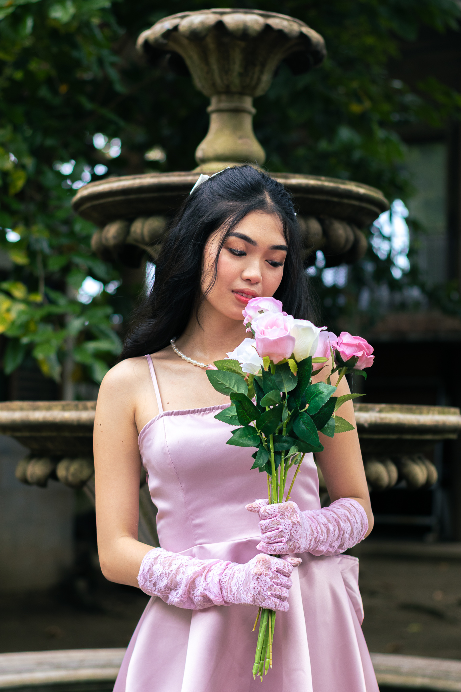
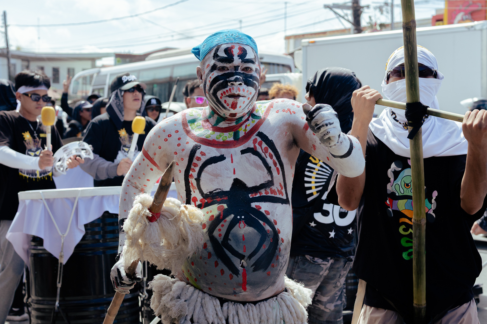
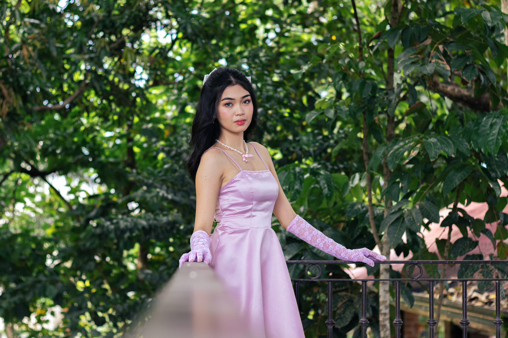
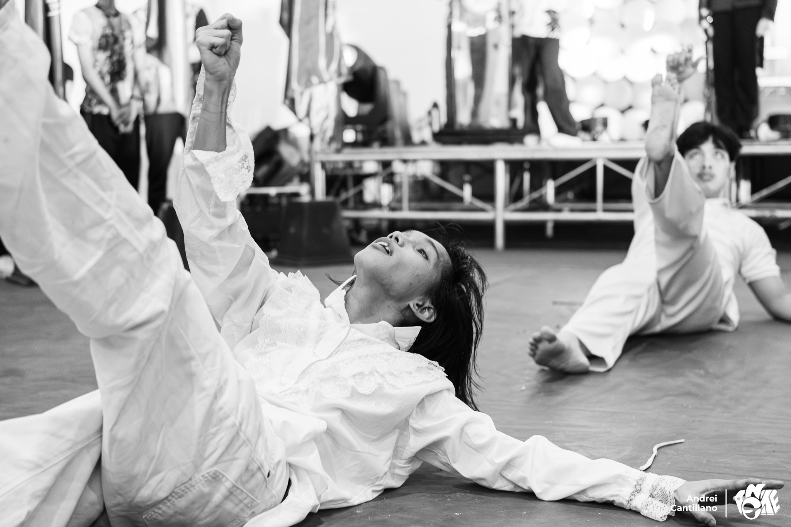
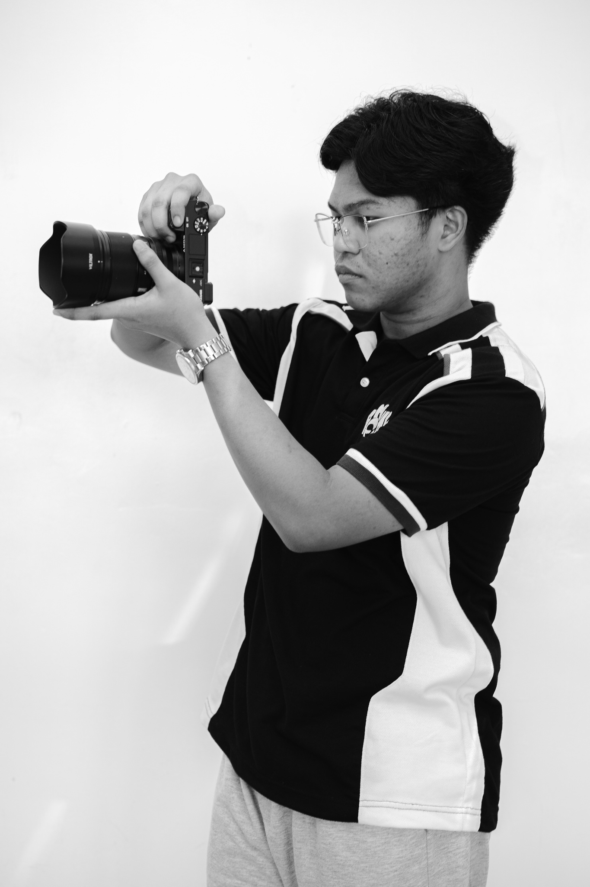

.png)
Cherishing & Immortalizing Moments
EYSI CLICKS
“We take photos as a return ticket to a moment otherwise gone.”
Youth & Milestones · Celebrations · Enduring Legacies

01The Philosophy
Preserving What Matters Most
Time moves relentlessly forward, but a photograph holds the quiet power to stand still. Behind the lens, I don't merely capture scenes — I capture a father's proud smile, the radiant grace of an 18th debut, the shared triumph of a graduating class, and the unspoken warmth that binds people together.
Based in Cabuyao, Laguna, my calling is to give you a return ticket to the days that mattered most — transforming fleeting seconds into timeless heirlooms that you and your loved ones will cherish for a lifetime.
02The Archive
Chapters in Time
Every photograph a memory stilled, every frame a chapter immortalized.
A celebration of youth, elegance, and dreams taking flight. Honoring the milestone of turning eighteen — timeless portraits of grace, laughter, and the dawn of womanhood.
Unscripted joy, joyful embraces, and the laughter of coming together. Freezing the vibrant warmth of milestones shared with the ones who matter most.
Shared purpose, collective pride, and legacies etched into history. Honoring the dedicated communities and milestone achievements that shape tomorrow.